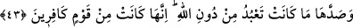
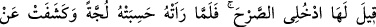
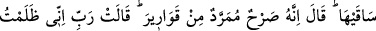
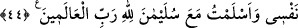

“müslüman olmuştuk.”
43. Onu, Allah’tan başka taptığı şeyler (o zamana kadar tevhid dinine girmekten)
alıkoymuştu. Çünkü kendisi inkârcı bir kavimdendi.
“Onu, Allah’tan başka taptığı şeyler (o zamana kadar tevhid dinine girmekten)
alıkoymuştu.” Bu, Allah Teâlâ tarafından onun bu ana kadar müslüman olmayışına
neyin mâni olduğunun beyanıdır. Yâni onun Allah Teâlâ’ya ibâdeti bırakıp da güneşe
tapması, müslüman olmasına mâni olmuştu.
“Çünkü kendisi inkârcı bir kavimdendi.” Bu, onun Allah’ı bırakıp güneşe tapmasının
sebebini ortaya koymaktadır. Yâni o küfürde kök salmış bir kavimdendi. Bu yüzden
onların arasındayken, Süleyman (a.s.)’ın hükümranlığı altına girene kadar Belkıs
müslüman olduğunu açıklayamamıştı. Nihâyet böylece mü’minler topluluğuna katıldı.
Mesnevî’de der ki:
Süleyman, Sebe’nin kuşlarına bir ıslık çalınca
Onların tümünü kendine bağladı
Canı ve kanadı olmayan ya da balık gibi dilsiz ve sağır
Bir kuş kalmıştı geriye
Âyet delâlet eder ki kişinin bir şeyle meşgul olması, kendisini onun zıddını yapmaktan
alıkoyar. Belkıs güneşe tapardı. Ona ibâdeti, kendisini Allah’a ibâdet etmekten
alıkoyuyordu. Allah Teâlâ’ya ibâdet ve muhabbet dışında hiçbir şeye derinlemesine
dalmamalıdır. Çünkü bir kimsenin kalbinde Allah’tan başka şeylerin (mâsivâ) sevgisi
ağır basınca, onu men edecek bir akıl ve din olmayınca, o şeyin sevgisi kendisini sağır
ve kör eder. Nitekim Hz. Peygamber (s.a.): “Bir şeyi sevmen seni kör ve sağır eder.”[64]
buyurmuştur.
Rivâyet edildiğine göre Süleyman (a.s.) Belkıs gelmeden önce emretti ve onun
geçeceği yolun üzerine avlusu beyaz camdan bir köşk yapıldı. Camın altından su
akıtıldı, içine balık ve benzeri deniz hayvanları salındı. Sanki o evin avlusu/ortası
büsbütün su gibi görünüyordu. Süleyman (a.s.)’ın tahtı da ortasına kondu ve üzerine
oturdu. Kuşlar, cinler ve insanlar etrafını sardılar.